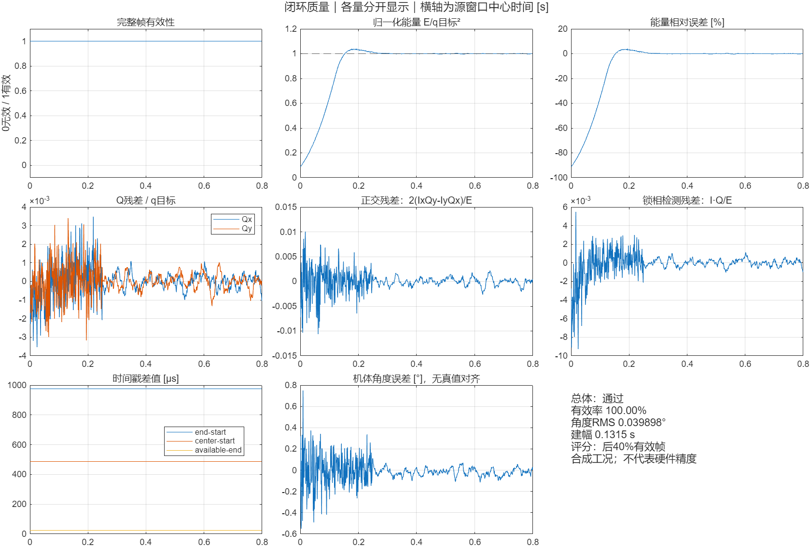

闭环质量报告：通过 合成仿真，稳态评分区间：t > 0.480 s；按源窗口中心，每帧一次。 有效帧：800 / 800（100.00%），门限≥95% 归一化能量均值：0.999981901；目标1，允许均值偏差<5% 归一化Q向量 RMS：0.000563201（描述量，未单独设通过门限） 正交残差 2(IxQy-IyQx)/E RMS：0.000853932，门限<1e-3 锁相检测残差 (I·Q)/E RMS：0.000367153，门限<1e-3（无量纲） 窗口长度 / 中心偏移 / 发布时间差：975.0000 / 487.5000 / 25.0000 μs 时间戳最大偏差：1.96053e-10 μs，门限<1e-6 μs 机体角度误差 RMS：0.03989810°，门限<0.1°；未知B时不可评分 建幅时间：0.1314875 s；DAC截幅累计：0；输出裕量：0.428925 V 不做真值偏置/延迟拟合；无效帧不评分；短记录不估计ARW。 所有通过门限为本工程合成演示门限，不是实际表头验收指标。

上方面板显示因果估计，不表示原始噪声消失。机械真值仅用于离线核验。
| 指标 | 原始观测 | 因果估计 | 机械真值 |
|---|---|---|---|
| 角度RMS[°] | 0.1146662 | 0.0398981 | 0.008549721 |
| 正交残差RMS | 0.002204462 | 0.0008539315 | 0.0003069554 |
机械核验通过=1；联合判定通过=1。校准与张量仍依赖独立参考。